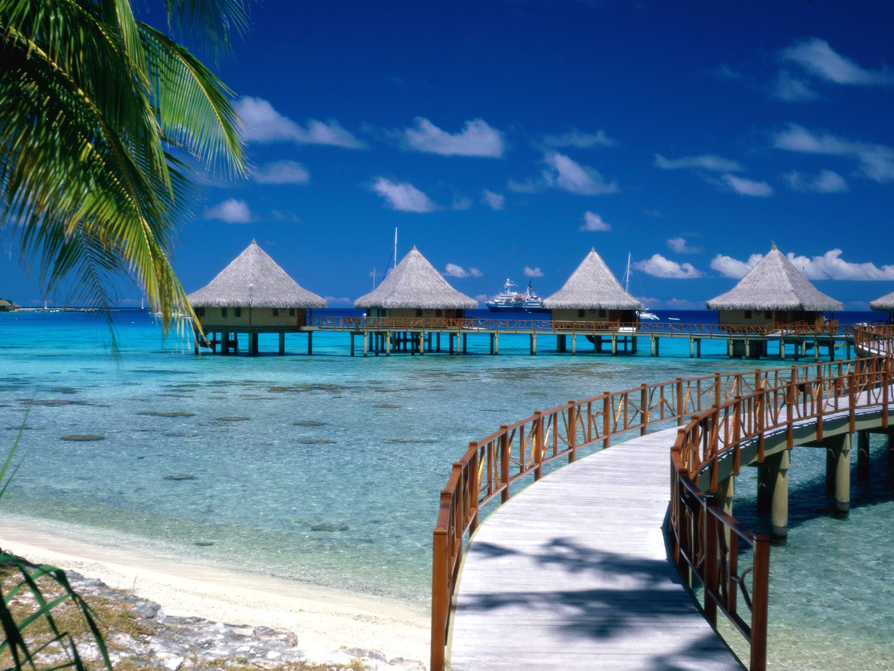
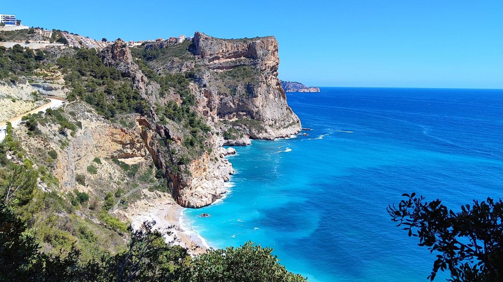
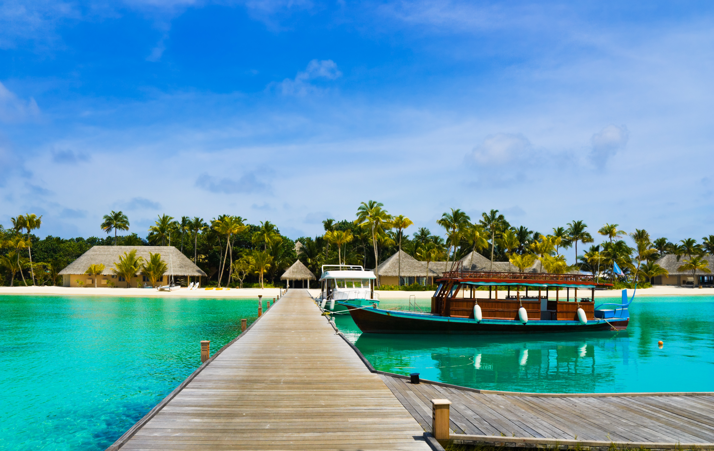

Bahía de las Perlas

Aguas cristalinas de color turquesa y cabañas tradicionales construidas sobre el mar. El lugar ideal para descansar y disfrutar del atardecer más hermoso del océano.
Donde el mar y el cielo se encuentran
Descubre los rincones más hermosos que nuestra ciudad tiene para ofrecer. Cada lugar es único y te espera con sus encantos naturales.

Aguas cristalinas de color turquesa y cabañas tradicionales construidas sobre el mar. El lugar ideal para descansar y disfrutar del atardecer más hermoso del océano.

Formaciones rocosas milenarias que se elevan sobre el mar. Miradores naturales con vistas panorámicas impresionantes y playas de arena blanca protegidas por la vegetación nativa.

Una playa de ensueño con arena blanca y aguas calmadas. Su muelle de madera es el punto favorito para ver salir el sol y disfrutar de paseos en embarcaciones tradicionales.